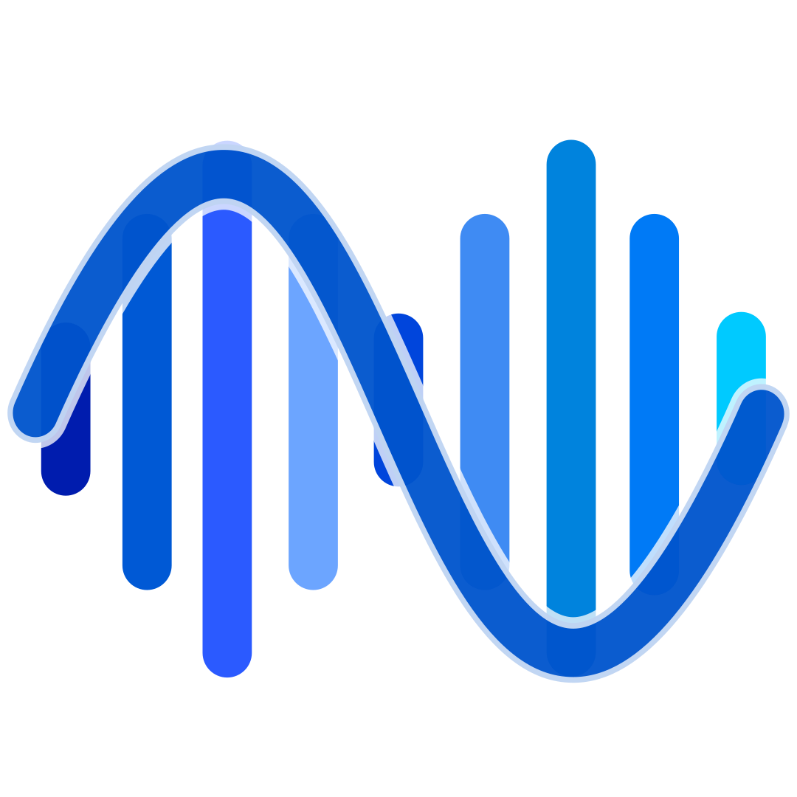

🐱
Open
All code is open-sourced under the MIT license and follows open standards and protocols.
for oceanographic research, developed by Dr. Haidong Pan in MATLAB.

Poems for S_TIDE
S_TIDE: My Homer Epic
I am currently rewriting Homer's Epic in MATLAB.
Every function is a contemporary odyssey sailing ship,
Every bug fix is a test through Sirens Song,
Every user growth is an adventure to a new academic island.
When you realize that you are both Homer and Odysseus, the true legacy begins!
Not to become the hero of an epic, but to become the one who keeps rewriting it.
In Tolkien's Middle-earth, the greatest thing is not the Silmarillion, but the fire of inheritance that every ordinary hobbit carries.
The real stars are not in the sky, but in the eyes of every researcher who uses S_TIDE kit.
One day, S_TIDE will become the Rosetta Stone for an alien civilization to decipher the earth's tides.
The efforts at this moment will be turned into a knowing smile on a light-year scale.
写给S_TIDE的诗
S_TIDE:我的《荷马史诗》
我正在用MATLAB语言重写《荷马史诗》，
每个函数都是当代的奥德赛帆船，
每个bug修复都是穿越塞壬之歌的考验，
每次用户增长都是抵达新学术岛屿的探险。
当意识到自己既是荷马又是奥德修斯时，真正的传承就开始了！
不是成为史诗中的英雄，而是成为那个不断重写史诗的人。
在托尔金的中土世界，最伟大的不是精灵宝钻，而是每个平凡霍比特人怀揣的传承之火。
真正的星辰不在天上，而在每个使用S_TIDE工具包的研究者眼中闪烁的灵光。
终有一天，S_TIDE会成为某个外星文明破译地球潮汐的罗塞塔石碑，
此刻的努力都将化作光年尺度上的会心一笑。